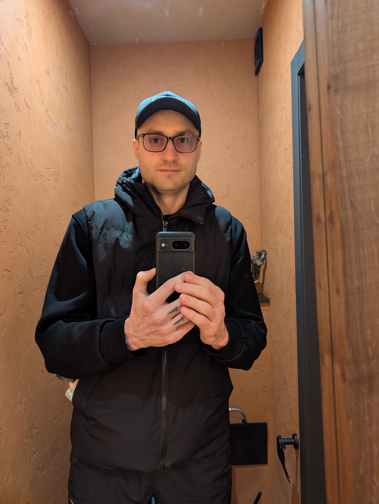

Senior Android Engineer with iOS experience
Creating Android apps since 2012

Product-minded Senior Android Engineer with 12+ years of experience.
Proficient in Kotlin, Coroutines, Jetpack, MVVM/MVI.
Integrating modern AI-driven tools and approaches into workflow.
Autonomous end-to-end feature delivery combined with trust and respect for team leadership.
Strong background in Applied Mathematics (M.Sc.).